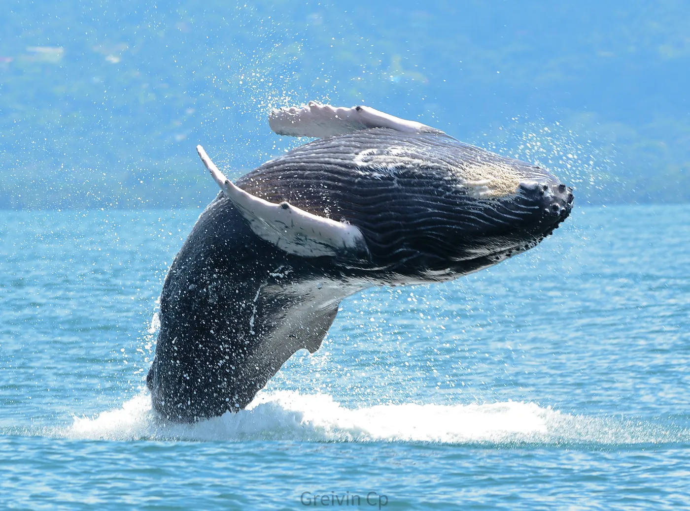

When to see whales in Uvita: a seasonal guide

Uvita is one of the best places in the world for humpback whale watching. In fact, the Costa Ballena (Whale Coast) is named after them. Here's when to go.
Whale watching seasons
There are two main seasons: a long one from July to October (southern-hemisphere whales) and a shorter one in late December and January (northern-hemisphere whales). August and September are usually excellent.
What to expect on the tour
Tours depart by boat from the Uvita area with local guides. With luck you'll see mothers with calves, breaches and tail slaps. Watching is always responsible, keeping a safe distance.
Tips
Bring sunscreen, water, a hat and a light jacket. Book ahead in high season. Dates and conditions depend on the sea and the operator; we confirm everything before your tour.